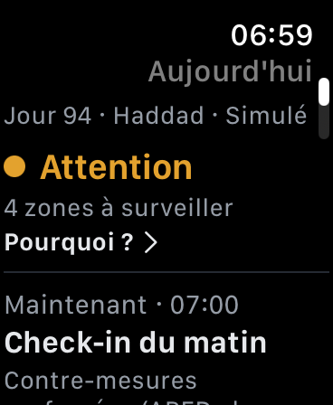
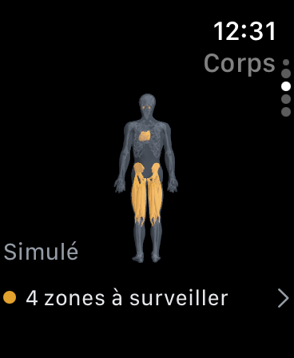
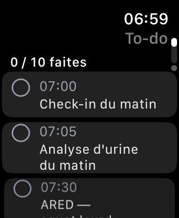

2016Scott Kellyreturns to Earth
Can barely walkstepping out of the capsule
2 hof exercise a dayfor the whole mission
True story [Daily Beast]
The scanner
Scan
Muscle volume · heart (ejection fraction) · kidneys (stones) · optic nerve
Blood test
Haemoglobin · cortisol · inflammation (CRP) · vitamin D · glucose
Urine test
Calcium and CTX: bone loss
Smartwatch
Heart rate · heart rate variability · sleep
Midjourney Scanner, announced in June 2026 [Midjourney Medical]
Sound through the body
In a warm water bath, a ring of sensors sends sound waves through the body. Each tissue refracts and diffracts them differently. No radiation.
A 3D body
From how the waves changed, the computer rebuilds each slice. Stacked up, they give the whole body in 3D, in about a minute.
Organs measured
AI recognises each tissue: muscles, organs, vessels, vertebrae. From that we get volumes and measurements.
Organ projection
Predicts bone, muscle and heart loss, with a range.
8.6%
predicted hip loss at return (6.4 to 11.7%)
Trained on 2,000 NASA-calibrated virtual astronauts
Blood age
Reads 13 markers from the blood test.
+3.5 years
for Kelly after 3 months in flight
Trained on 9,326 real adults (NHANES)
Mood signal
Compares the astronaut with themselves, day after day.
D83
alert, 8 days after the mood change began
92% of episodes caught across 1,500 virtual astronauts
Models predict, NASA standards decide · simulated training data [H], except NHANES (CDC)

Today
The day's level, the instruction and its “Why?”.

Body
The areas to watch, at a glance.

To-do
The day's tasks, ticked off on the wrist.
Apple Watch app (SwiftUI) · also streams heart rate live to the War Room · simulator screenshots, Kelly's data simulated [H]
Smart glasses
film and record, 24 hours a day
3 AI observers
log the facts, without interpreting
3 AI psychologists
give a level, kept if 2 out of 3 agree
Human psychologist
receives the file and decides
Prototype: fictional astronaut, simulated days, disorder injected on D75, analysed by Claude [H] · AI flags, the psychologist decides